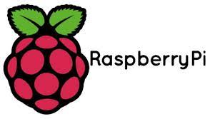

시작에서 라즈베리파이를 이용해서 카메라 모듈, 온습도 센서, 모터 제어를
순서도에 나와있듯이 구현을 하였습니다.
시스템 구조
식물을 키우는 상단이 있고, 중간에는 어항이 있으며, 하단에는 관수를 지급하는 통이 있는데
식물에 있는 물이 어항으로 내려가게 되고, 어항에 있는 물이 다시 식물에게 가는 시스템으로,
하단에 관수는 물의 청정과 물의 증발로 인한 물 감소를 보완하기 위해 두었습니다.
사용자 수행에 따른 세부 동작 과정
카메라 모듈은 앱에서 실행하게 되면 카메라 모듈의 화면을 휴대폰으로 보여줍니다.
온습도 센서는 gpio핀을 설정하고 새로 고침을 해서 앱에서 연동한 뒤 온도와 습도를 표시해줍니다.
모터 제어의 경우 on/off를 앱으로 해서 누르면 on의 경우 물이 나오고 off의 경우 물이 안나옵니다.
프로젝트 추진 결과
수행과정 및 결과 분석

먼저, 처음부터가 꼬이기 시작해 좀 일정에 차질이 있었으며, 라즈베리파이를 플러터와 하는 도중에 정보 부족하였고,
다른 것들은 처음에 한 것을 수정해서 고쳤으나, 플러터가 처음해보는 것이기도 하며, 지식이 부족했던 것이 악 조건이 되었습니다.
유지 보수 계획
먼저, 플러터와 하드웨어를 연결하는 것 부터 해보아야 겠고, 다른 것들도 외부 형태이며, 꾸미기를 하지 않아
외관 상에 문제와 기능을 더 추가해야겠다는 생각이 들었습니다.